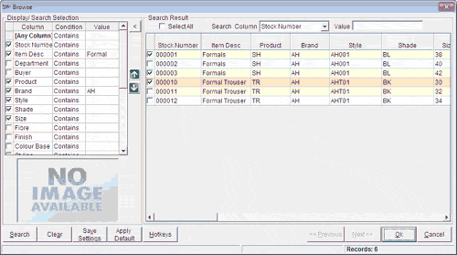

The common browse option helps to browse Items, Vendor, Customer and Chain Stores from transaction options. The columns based on which data can be filtered in the Browse window depends on the option from where the window is opened.
In this Browse window, you have the option to:
Display the columns based on selection
Change the order in which columns in the result set are displayed
Hierarchically filter values based on any order of columns
Filter the data based on a specified value in any column
Sort rows in the result set based on a column
Find records in the result set with a specified value in a column, even if the column is hidden
Save separate search settings for different transaction types in different options, and revert to default settings any time
A sample of the Browse window is shown for reference.

Display/ Search Selection: Displays the list of columns based on which the filter criteria can be specified and the result can be displayed. The columns in the list depends on the option from where you have called the browse.
The hierarchy of filtering is according to the order of columns shown in the list. You may change the order of columns by using the  and
and  .
.
Select the columns for display (in the Search Result grid) by clicking the boxes to the left of the column names. Select the required criteria under Condition and specify the value against each or press F2 to choose the value from a list. The records get sorted as you enter the filter values. Filter criteria can also be specified against columns that are not displayed.
In case you want to filter based on a value in any of the relevant columns, specify the condition and value against [Any Column].
Click to hide Display/ Search Selection. On clicking, the button changes to that can be used for showing Display/ Search Selection.
Note: If image of the item is present, the same will displayed in the PICTURE area, based on the current row in the Search Result grid. In the case of Customer, Vendor, etc., this area is used to display the address.
Search Result: Displays the list of selected rows that satisfy the filter criteria, in ascending order of the stock numbers, customer code, vendor code, etc. as the case is.
Select All: Click to select all rows displayed in the grid. This option is available only when you open the Browse window from a transaction that supports multiple selection. When transactions allow multiple selection, a column with selection boxes are also displayed to the left of each row.
Search Column: Select the column in which you want to search for a value and locate the row that contains the value. The rows in the grid get sorted based on the selected column. You may also search a value in a column that is not displayed in the grid.
Value: Enter the value to be searched, based on which you want to locate a row.
Search: Click to refresh the search results in the grid.
Clear: Click to clear all the values entered under Display/ Search Selection.
Save Settings: Click to save the search settings for the transaction type selected in the current option for the current user.
Apply Default: Click to revert to the default settings.
Hotkeys: Click to view the hotkeys list.
{kind=link}